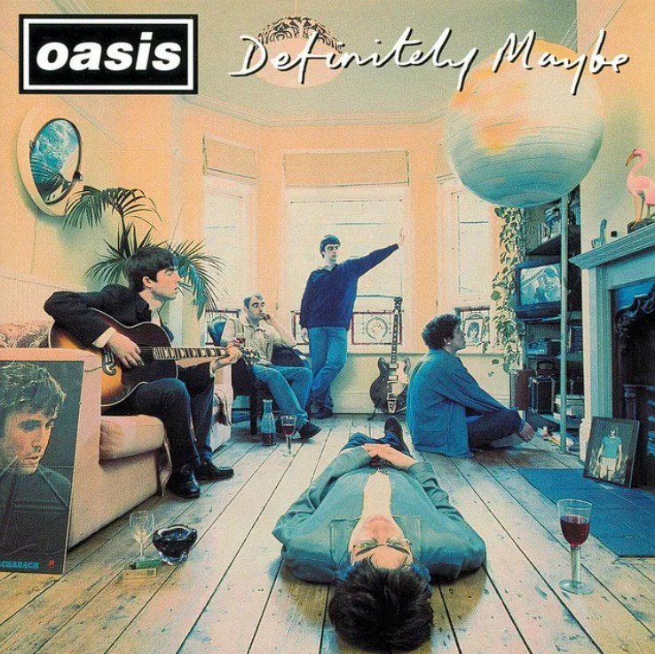
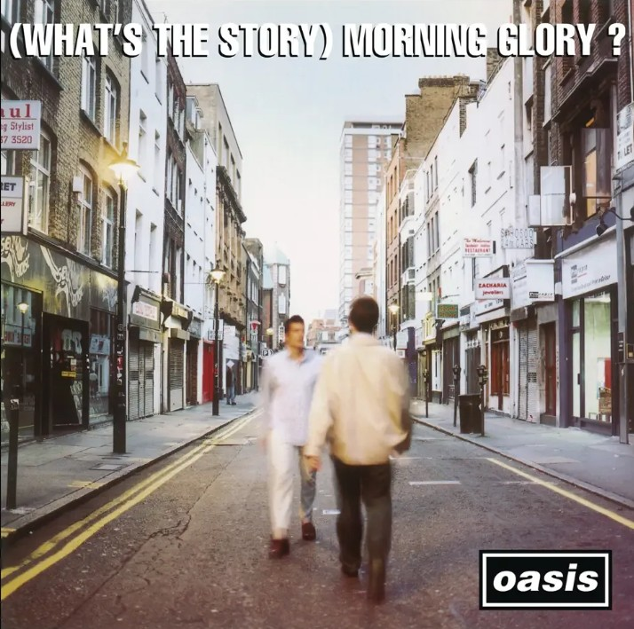
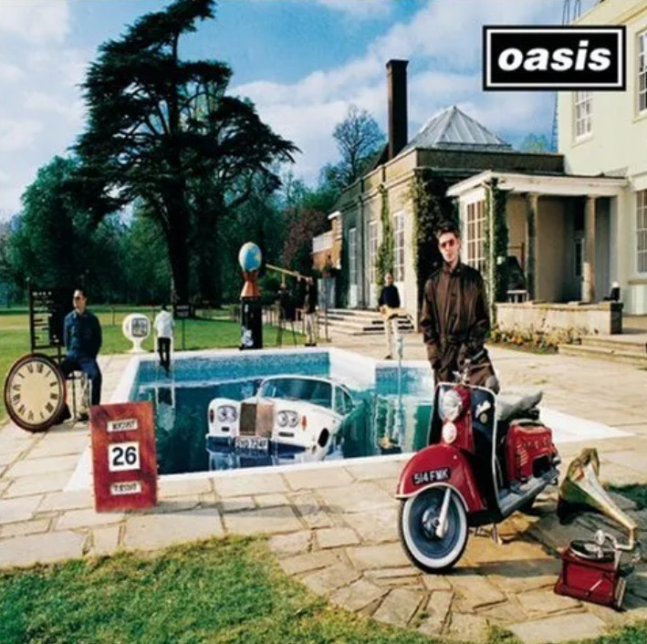
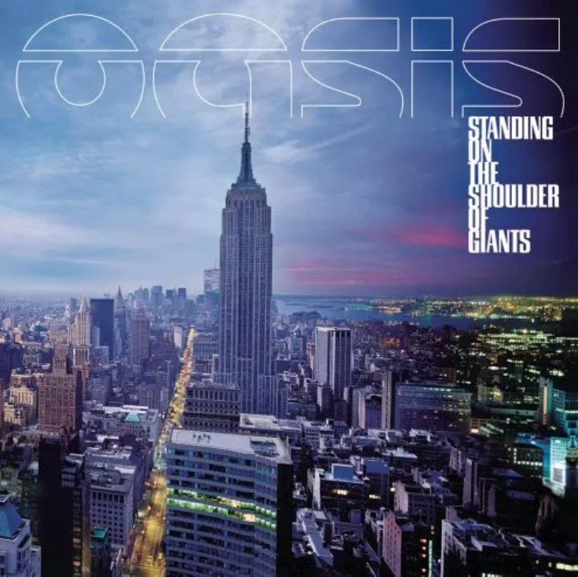
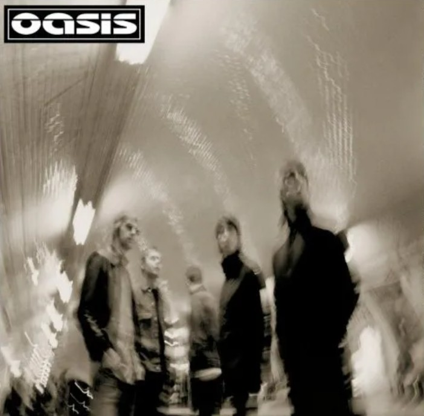
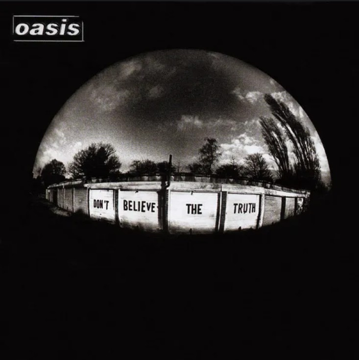
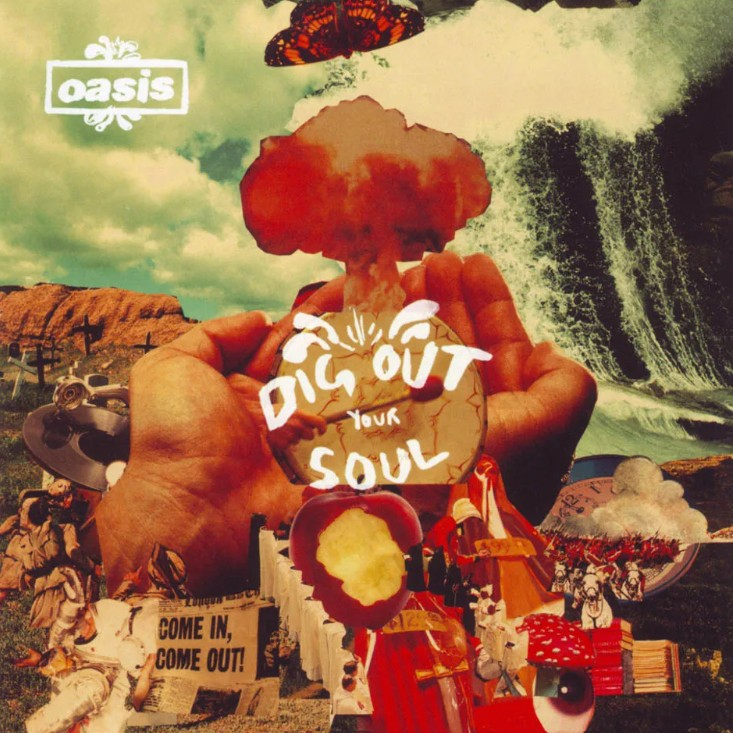

| THE STORY | MEMBER | ALBUM | GOODS | LIVE |
|---|
|  | Definitely MaybeAugust 29, 1994 Britpop, alternative rock, punk rock Oasis' first full-length album Track
|
||||||||||||||
(What's The Story) Morning Glory?October 2, 1995 Britpop, alternative rock, punk rock Oasis' 2nd full-length album Track
|  | |||||||||||||
|  | Be Here NowAugust 21, 1997 Britpop, alternative rock, punk rock Oasis' 3rd full-length album Track
|
|||||||||||||
Standing on the Shoulder of GiantsFebruary 28, 2000 Alternative rock, psychedelic rock, neo-psychedelia Oasis' 4th full-length album Track
|  | |||||||||||||
|  | Heathen ChemistryJuly 1, 2002 Alternative rock Oasis' 5th full-length album Track
|
|||||||||||||
Don't Believe the TruthMay 30, 2005 Pop rock, alternative rock Oasis' 6th full-length album Track
|  | |||||||||||||
|  | Dig Out Your SoulOctober 6, 2008 Neo psychedelia, alternative rock Oasis' 7th full-length album and their last full-length album Track
|
|||||||||||||